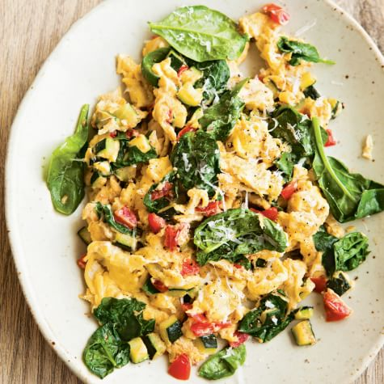
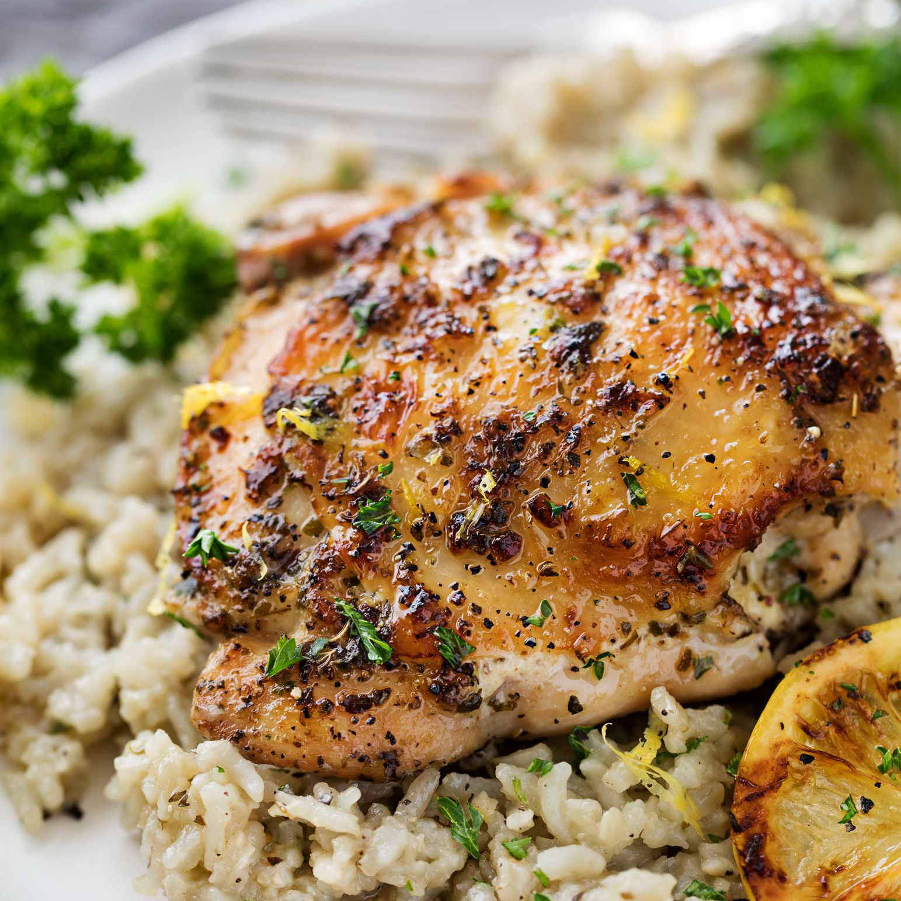
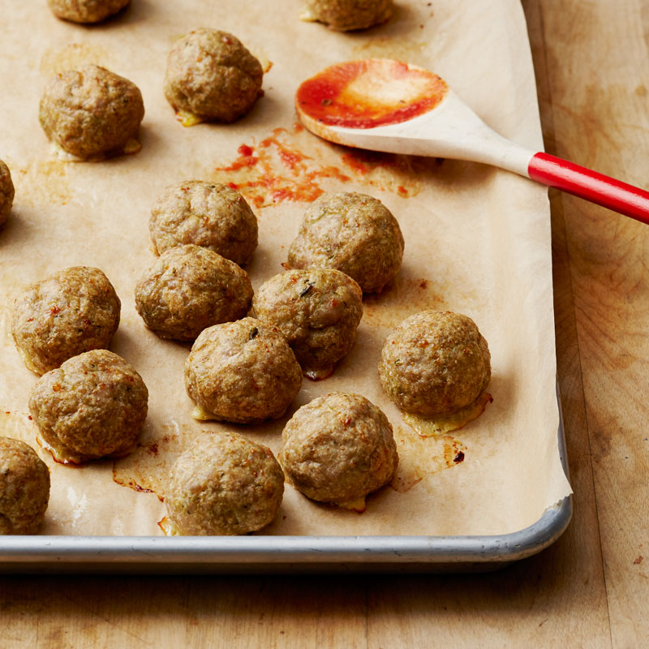
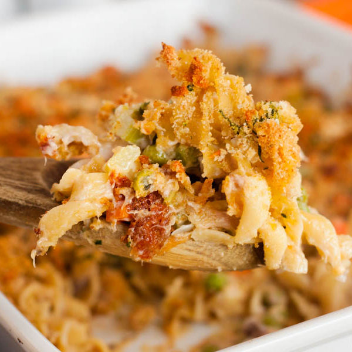
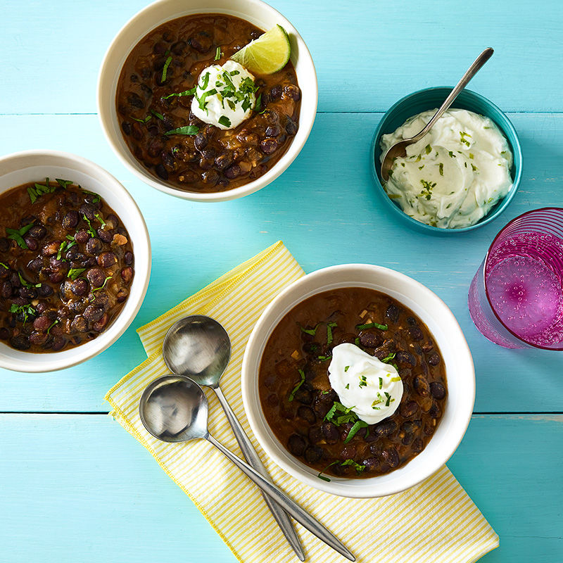
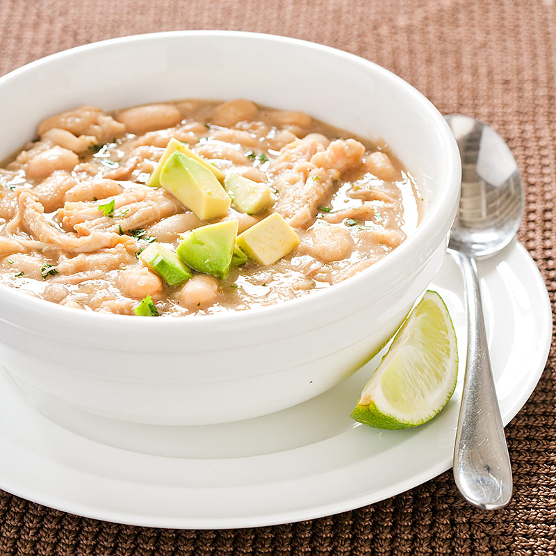
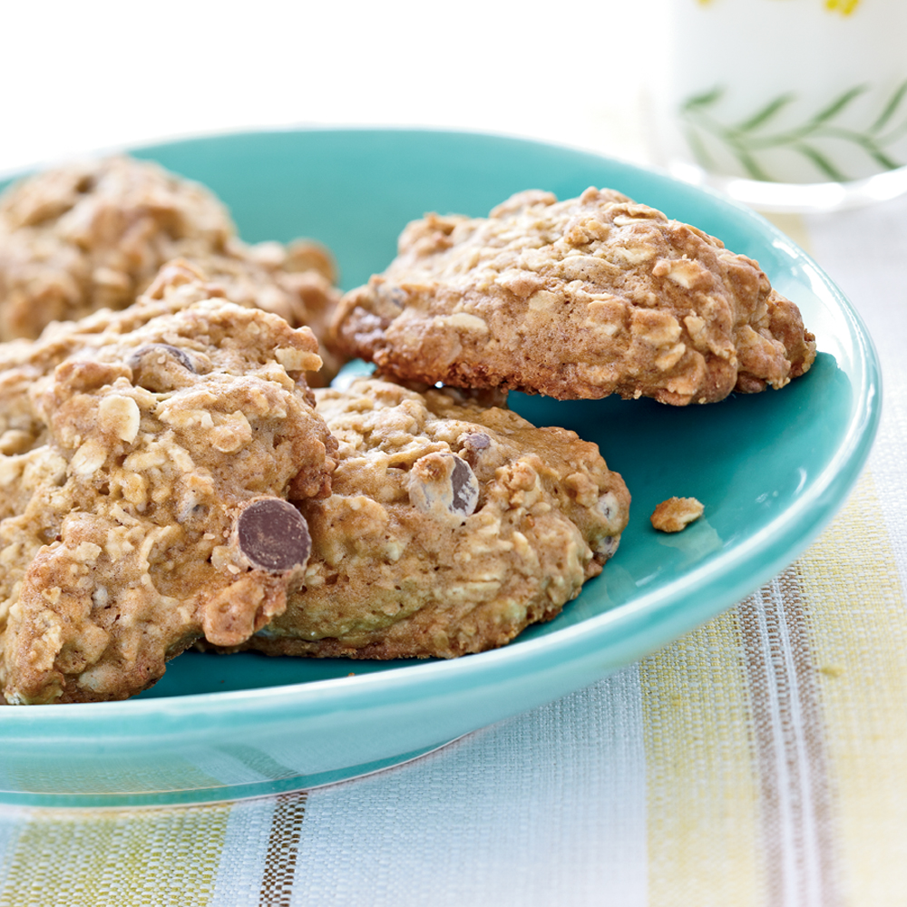

Gallery
Breakfasts
These Banana Walnut Pancakes are a delicious twist on an easy breakfast. With only four ingredients, these are one of the easiest and most delicous breakfasts you can make. They are perfect for a sleep weekend morning, and they will impress your family and friends without taking hours to make. If you want to make your own pancake batter there is a easy recipe below the pancake recipe. Link

No wonder avocado toast is everywhere: It’s a great source of fiber and contains a host of good for-you vitamins, and the crisp/creamy texture satisfies every time. Plus it makes for a darn good Instagram picture if you are into that kind of thing. When making this dish, however, it is important to remember that the avocados make the dish. So, it will be worth your while to find the best avocado that is perfectly ripe because otherwise, if I'm being honest, you are just selling yourself short. Link
We've all had those mornings. Yeah, 'those' mornings, you know the ones: your body is heavy you don't want to do much of anything, it's a day to be comfy. Well, even on those days where you're running on Eco mode, you're still gonna need some kind of fuel to keep up the comfort levels, and this dish does just that. It's lean and healthy yet hearty enough to keep you placated on a couch till your next lazy day. Take a stab at 'chill' with this easy to make Farmer Market Scramble. (Courtesy William Sonoma) Link
Entrees
Chicken breast and rice is workday classic. However, it can be a little bland. If you want to add some flavor and intrigue to your weekday chicken, then try this recipe. With the addition of a just a few ingreadients, you can turn a boring old chicken breast into a delicous dinner. I will even guitily admit that I cannot help but suck on the baked lemon slices. They are just too good, and I can't get enough. This recipe is courtesy of Oliver Tufte photo courtesy of thechunkychef.com. Link
These four-ingredient meatballs are genius. By adding reduced-fat pesto sauce to the ground turkey meat, you streamline the meatball prep. With one easy ingredient, you get basil, garlic, cheese, and oil. And in addition to great flavor, the pesto makes the meatballs wonderfully juicy, too. All that's left to add is breadcrumbs, egg whites, and a little salt. You can serve these with spaghetti, or even spaghetti squash. Link
Tuna Casserole is a surprisingly tasty dish that young people seem to fear. Sure the name IS unflattering, and its not a totally common household dish, but this dish deserves a chance. Hearty, healthy, and good for the soul, a good casserole is just what we need in trying times like these. So delay no further and heat up that oven, the casserole is waiting. This casserole can serve your whole family without an issue, and this is a casserole that is easy to love. So, it can make your hard to please family happy. Link
Soups
This easy recipe is courtesy of weightwatchers.com and can make a great meal, side, or snack. Chicken tortilla soup is a great Winter or Summer soup and goes great with some fresh herbs and lime. If you are vegetarian, feel free to cook without the chicken, replace the chicken broth with veggie broth, and just have tortilla soup. Tortilla soup is a personal favorite of mine, and you will not come across a recipe better than this one. The crunch of the chips is the perfect contrast with a nice spicy soup. Link

Satisfying and so simple to make, this soup is packed with fiber and protein to sustain you. For added heat, stir a little chopped canned chipotle peppers in adobo sauce into the lime cream. Black beans are a classic here, but there is no reason you can't substitute kidney, navy, or pinto beans. If you wish to use dried beans, see Notes below. Serve this soup with a simple green salad or as a delicious Link
Holy cow this is good. You thought you'd seen it all with Chili, but now you know that real Chili just likes to play hard to get. If you haven't had the pleasure of discovering what exactly the original designer of Chili most likely had in mind, then please, broaden your horizons here. Furthermore, this chili is heathly and hearty. Most chilis will sit in your gut for hours and even days, but this chili is easy on the eyes and light on the gut. So, next time your looking for a winter dish that won't leave you stuffed for hours choose this chili. Link
Sweets
These Special K Bars are a Tufte family tradition. Although I would love to avoid cliche, these are Grandma's recipe. They are gooey, delicous, and melt in your mouth. If you are on a diet, I would avoid these because it is impossible to only eat one. I have wathced my entire extended family devour these in minutes. My uncle devours these things in seconds, and my Grandma is famed for them. This recipe is courtesy of the late Grandma Doris Tufte, but the image is courtesy of familycookbookproject.com. Link
Go ahead and grab a couple of these bite-size cookies. They might be little, but they pack a big chocolate punch. We’ve used dark brown sugar in these cookies, which contains more molasses than light brown sugar. It adds a rich, complex flavor to these cookies and helps make them moister and chewier. But if you have only got light brown sugar in your pantry, that will work just fine. Swap out the chocolate chips for any morsels you like—cinnamon chips, butterscotch, toffee, or white chocolate chips. Or stir in some chopped nuts, if you’d like a little crunch. Link
Awh man, its happened again. You're fixing for some sweets but, gosh darn it, you know you shouldn't. You can imagine your doctor's sympathetic yet scathing tone-"they're just not healthy!" Well, now you can tell your doctor to think again! Introducing "Bananookie" (patent pending). Sweet, satisfying, and more nutritional than your average desert, this cookie does the trick! Bake 'em up and pack em' down, no need to fear these natural sugars and delicious nuts working in perfect harmony to provide you safe-harbor from the nasty chemicals and sweeteners you can find in store-baked sweets. Just look at them! Need I say more? Link
